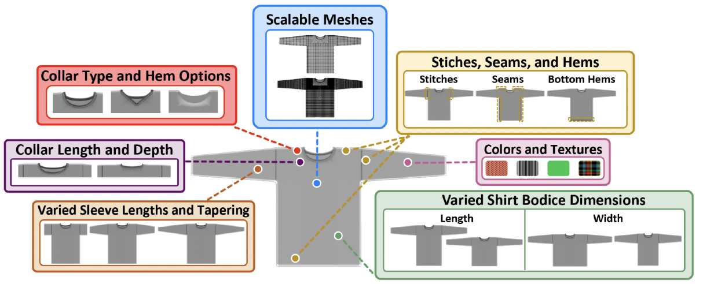
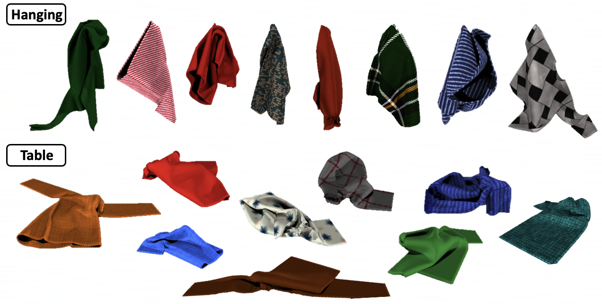
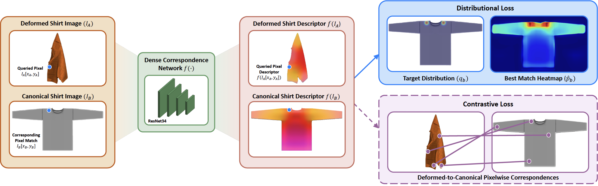
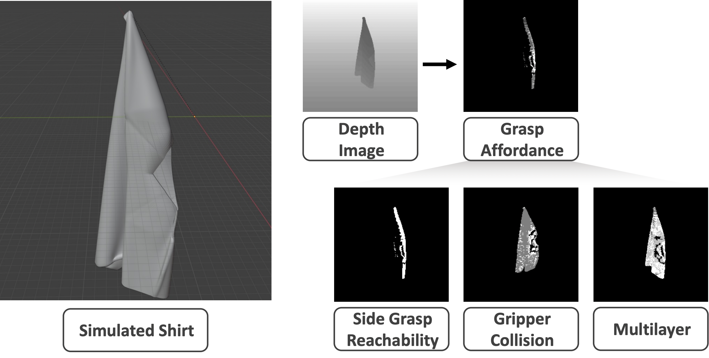
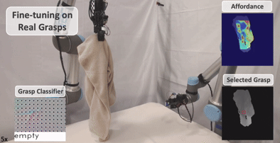
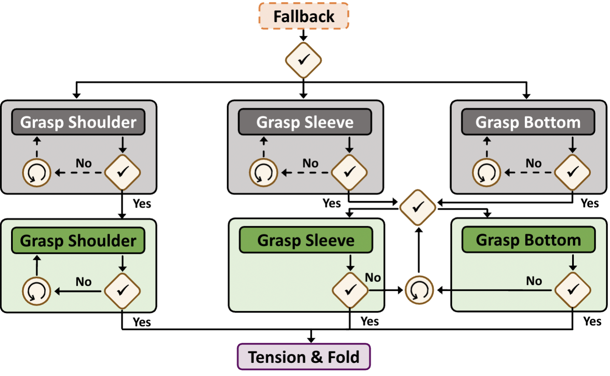

Manipulating clothing is challenging due to complex configurations, material dynamics, and frequent self-occlusion. Prior systems often flatten garments or assume visibility of key features. We present a dual-arm visuotactile framework that combines confidence-aware dense visual correspondence and tactile-supervised grasp affordance to operate directly on crumpled and suspended garments. The correspondence model is trained on a custom, high-fidelity simulated dataset using a distributional loss that captures cloth symmetries and generates correspondence confidence estimates. These estimates guide a reactive state machine that adapts folding strategies based on perceptual uncertainty. In parallel, a visuotactile grasp affordance network, self-supervised using high-resolution tactile feedback, determines which regions are physically graspable. The same tactile classifier is used during execution for real-time grasp validation. By deferring action in low-confidence states, the system handles highly occluded table-top and in-air configurations. We demonstrate our task-agnostic grasp selection module in folding and hanging tasks. Moreover, our dense descriptors provide a reusable intermediate representation for other planning modalities, such as extracting grasp targets from human video demonstrations, paving the way for more generalizable and scalable garment manipulation.
To enable this behavior, we have four main contributions (described further in below sections):





